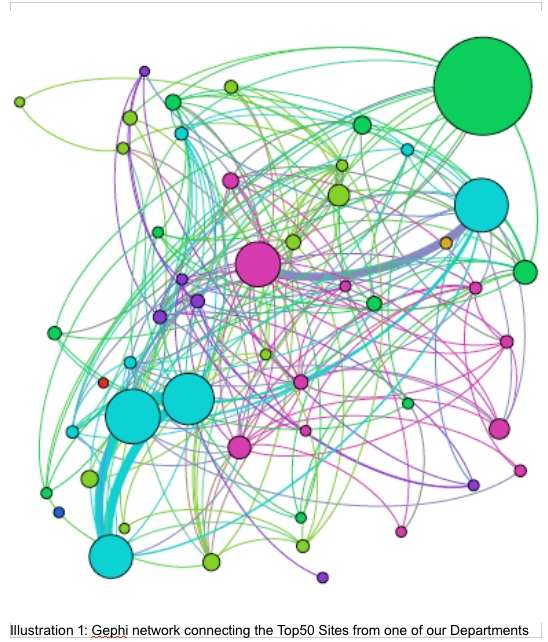

How to work with Gephi to visualise a network of Sites connected by Users
Originators/Authors
Anne Clarke
EVAD
, University of Cambridge
Purpose
Instructions on how to import data from a list of sites and their active users and visualise the
network using Gephi.
Background
We have developed tools that can be run to extract a given list of sites and their active users from
the VLE logging data. This gives us users that have actually visited the site as opposed to those
who have been given access to the site.
Ingredients
- Perl statistics tool developed for this project (this may need customising to fit your version of the VLE logging data).
- Gephi application
- Basic knowledge of speadsheets – OpenOffice was used here.
Assumptions
The user has downloaded the current version of the Gephi application and worked through at least
the basic on-line tutorial.
Method
You will first prepare the data for import into Gephi. After importing it, you will be able to visually
explore the network using Gephi
Individual steps
Prepare Data for Gephi:
-
Create a list of sites and active users (eg all_active_users_for_sites.csv):
This can be done by inputting a list of sites to the perl stats.pl script and running this to produce a list of active users for each site. Eg active_users_for_.csv
Join these files together: cat act* > all_active_users_for_sites.csv
- Use spreadsheet sort to sort in order of Site and remove all the heading lines (Site, User etc).
Check and correct the user ids at this point – I found some (eg thu21) which had been mangled by
the spreadsheet into date format.
- Run gephi perl script against this to produce list of nodes and edges for import into Gephi.
eg perl gephi.pl -f all_active_users_for_sites.csv -w
This determines the number of active users for each site and the number of shared users between
any 2 sites. It will produce 'nodes.csv' and 'edges.csv' in the input file location.
Importing Data into Gephi:
- Open up Gephi and select File > New Project
- Click on the Data Laboratory Tab
- Click on Import Spreadsheet and browse to the location of the nodes file that you created above.
- Make sure 'As Table' is set to Nodes Table
- Click on Next
- Set the Total Users field to Integer – choose from the drop down list (you may need to go up though the list of options)
- Click on Finish
- Nodes table should now be imported
- Repeat for Edges table
- Go to Overview tab
- You should now see a network !
Working with Gephi:
(Please follow the Gephi Getting Started tutorial to learn the details for these steps)
Setting the node size to Number of Users:
- Select the Ranking tab at the top right of the screen
- Choose Total Users as the Ranking Parameter
- Click on the colour wheel button
- Set the Colour range
- Click on Apply
- The nodes will now have colour intensity linked to the number of users
- Click on the diamond icon
- Set the Min Size (eg 10) and the Max Size (eg 100). The range should already be set to the max and min no of users.
- Click on Apply
- The node sizes should now reflect the number of users.
Changing the Network Layout:
- From the layout window on the bottom left of the page select Force Atlas
- Set Repulsion strength 10000, tick Adjust by sizes.
- Click on Run
- Click Stop when it has stopped changing
Showing the Labels
- Click on the black 'T' icon at the bottom of the Graph display
- You should see the node labels
- You can use the rightmost slider at the bottom of the the Graph display to change the text size.
To stop the Labels overwriting each other:
- From the Layout tab – bottom of left hand side of page:
- Choose Label Adjust
- Click on Run
To highlight clusters of nodes:
- Click on the Statistics tab on the left hand panel.
- Click to run Modularity – this looks for clusters of nodes that are tightly associated with each other and more loosely linked to other nodes.
- Click on the Partition tab on the right hand panel.
- Choose Modularity Class and click on Run
- You should now see tightly associated nodes have the same colours.
Hiding Nodes
- Go to Filters menu
- Click on Topology then drag 'Degree range' down to the Query section.
- Use the slider to change the Degree range settings
- Press filter
- You should see that the less connected nodes have been hidden.
Interaction with Gephi
- If you click on one of the nodes in Overview mode you can see the linked nodes highlighted.
Producing an output view
- Click on the Preview tab.
- Click on Refresh
- If you don't see anything try clicking on the Reset Zoom button
-
Use the Default preset with the following settings:
- Show labels ticked
- Increase label font if needed
- Undirected Curved set
- Rescale weight ticked (this makes sure the connecting lines are not really thick)
- Thickness – maybe set to 4 – this thickens up the lines reduced above
- Proportional Label size un-ticked
- Click on Refresh
- You can use the Preview ratio slider to filter out less active nodes.
- Export to SVG/PDF to save a copy
Output
